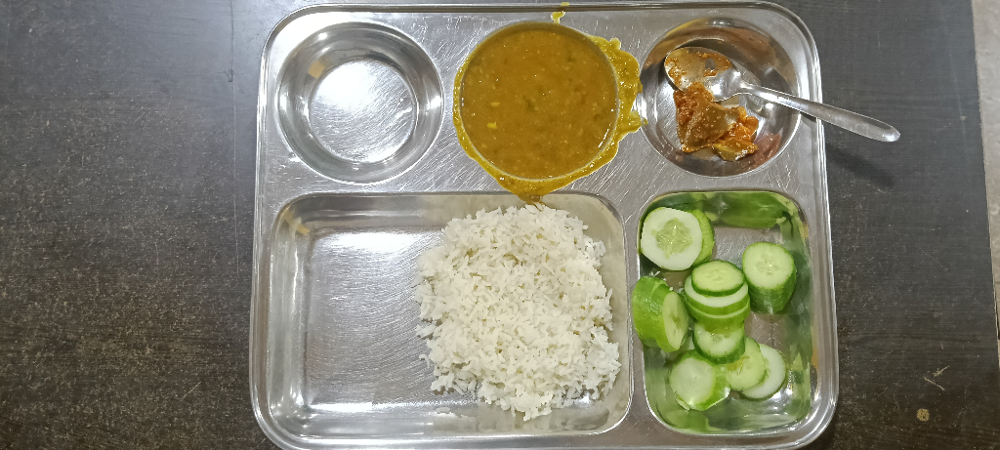
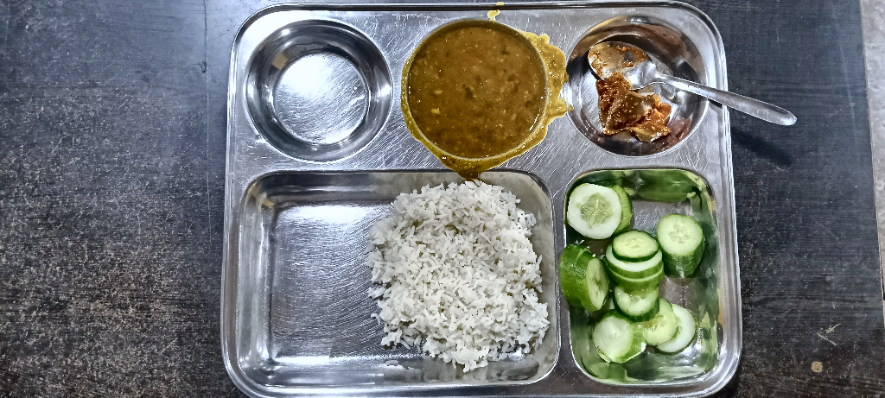
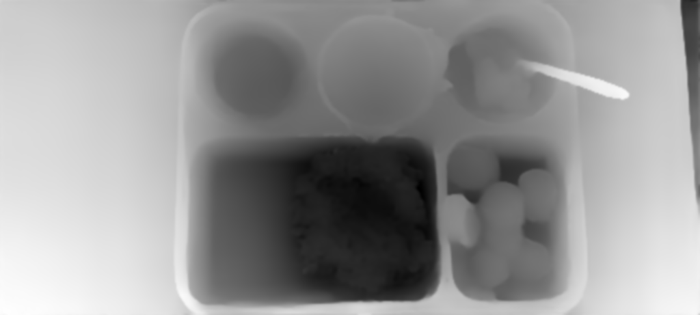
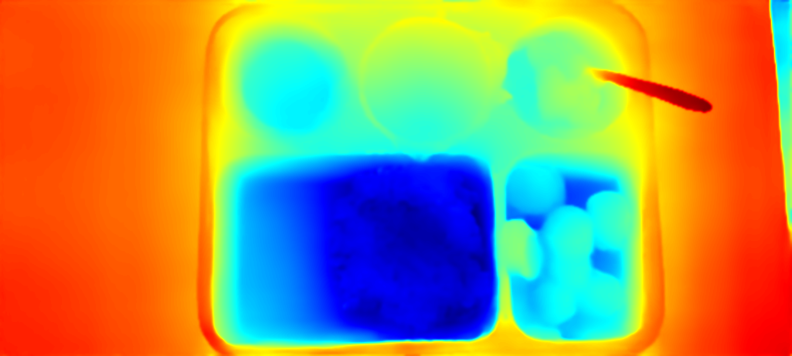
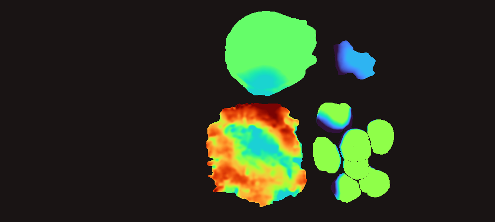
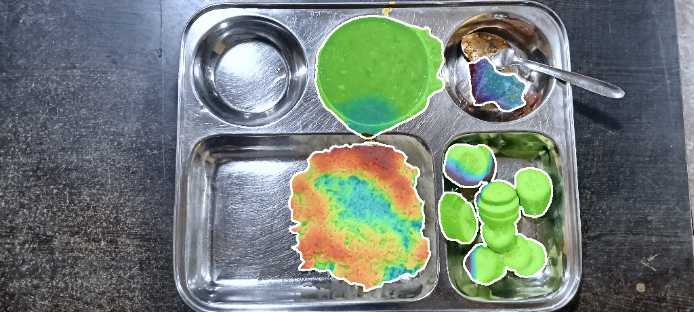
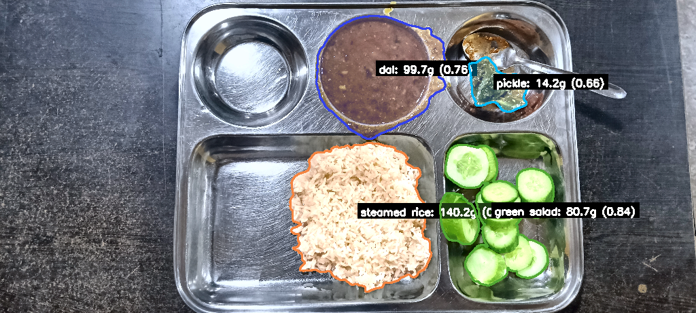

{
"resolution": "4080x1840",
"channels": 3,
"dtype": "uint8",
"expected_items": [
"chapati",
"green salad",
"mix veg",
"steamed rice",
"cake",
"chutney",
"dal"
],
"plate_profile": "mess_tray_5comp",
"debug": true
}






[]
{
"item_id": "steamed rice_1",
"area_pixels": 35174,
"estimated_height_cm": 2.308,
"volume_estimate_ml": 144.5,
"density": 0.97,
"mass_g": 140.2,
"class_label": "steamed rice",
"class_confidence": 0.939,
"depth_stability": 1.0,
"scale_confidence": 0.7,
"composite_confidence": 0.8864,
"prior_applied": true,
"diagnostics": {
"original_sam3_query": "rice",
"candidate_labels": [
"rice"
],
"menu_matching_result": "steamed rice",
"final_food_label": "steamed rice",
"confidence": 0.939,
"uncertainty": 0.061,
"original_mask_id": "mask_00",
"grouped_instance_id": "inst_0",
"fragment_count": 1,
"decision_reason": "SINGLE_INSTANCE"
},
"volume_diagnostics": {
"food_name": "steamed rice",
"fallbacks_applied": [
"MOUND_WELL_FLOORED_1.8CM"
],
"raw_pixel_count": 35174,
"archetype": "mounded_grain",
"archetype_justification": "Granular cohesive mound filling compartment bed + curved dome above rim (steamed rice)",
"pixel_area_method": "plate_calibrated_uniform",
"mean_pixel_area_cm2": 0.001965728122740984,
"food_surface_area_cm2": 69.14,
"valid_pixel_count": 35015,
"clipped_pixel_count": 159,
"valid_pixel_ratio": 0.9955,
"height_stats_cm": {
"min": -26.729,
"p5": -25.333,
"p25": -24.438,
"median": -23.513,
"mean": -23.621,
"p75": -22.931,
"p95": -21.979,
"max": -18.181,
"std": 1.037
},
"effective_well_depth_cm": 1.8,
"raw_integrated_vol_ml": 159.61,
"compartment_capped": true,
"cap_limit_ml": 144.5,
"final_volume_ml": 144.5
},
"fragment_count": 1
}{
"item_id": "green salad_2",
"area_pixels": 21540,
"estimated_height_cm": 1.816,
"volume_estimate_ml": 76.9,
"density": 1.05,
"mass_g": 80.7,
"class_label": "green salad",
"class_confidence": 0.8335,
"depth_stability": 1.0,
"scale_confidence": 0.7,
"composite_confidence": 0.8351,
"prior_applied": true,
"diagnostics": {
"original_sam3_query": "sliced cucumber",
"candidate_labels": [
"sliced cucumber"
],
"menu_matching_result": "green salad",
"final_food_label": "green salad",
"confidence": 0.8335,
"uncertainty": 0.1665,
"original_mask_id": "mask_01",
"grouped_instance_id": "inst_1",
"fragment_count": 11,
"decision_reason": "FRAGMENT_GROUPED_11_PIECES"
},
"volume_diagnostics": {
"food_name": "green salad",
"fallbacks_applied": [],
"raw_pixel_count": 21540,
"archetype": "sliced_salad",
"archetype_justification": "Discrete planar vegetable slices with calibrated cut-thickness floor (green salad)",
"pixel_area_method": "plate_calibrated_uniform",
"mean_pixel_area_cm2": 0.001965728122740984,
"food_surface_area_cm2": 42.34,
"valid_pixel_count": 21426,
"clipped_pixel_count": 114,
"valid_pixel_ratio": 0.9947,
"height_stats_cm": {
"min": -18.418,
"p5": -15.386,
"p25": -13.769,
"median": -12.708,
"mean": -12.663,
"p75": -11.832,
"p95": -9.022,
"max": -8.363,
"std": 1.736
},
"slice_thickness_floor_cm": 0.75,
"raw_integrated_vol_ml": 76.88,
"compartment_capped": false,
"final_volume_ml": 76.9
},
"fragment_count": 1
}{
"item_id": "dal_3",
"area_pixels": 25796,
"estimated_height_cm": 1.795,
"volume_estimate_ml": 91.0,
"density": 1.096,
"mass_g": 99.7,
"class_label": "dal",
"class_confidence": 0.6961,
"depth_stability": 1.0,
"scale_confidence": 0.7,
"composite_confidence": 0.7632,
"prior_applied": true,
"diagnostics": {
"original_sam3_query": "dal tadka",
"candidate_labels": [
"dal tadka"
],
"menu_matching_result": "dal",
"final_food_label": "dal",
"confidence": 0.6961,
"uncertainty": 0.3039,
"original_mask_id": "mask_02",
"grouped_instance_id": "inst_2",
"fragment_count": 1,
"decision_reason": "SINGLE_INSTANCE"
},
"volume_diagnostics": {
"food_name": "dal",
"fallbacks_applied": [
"WELL_DEPTH_FLOORED_2.0CM"
],
"raw_pixel_count": 25796,
"archetype": "liquid_in_well",
"archetype_justification": "Conformal fluid filling molded compartment well; flat free surface (dal)",
"pixel_area_method": "plate_calibrated_uniform",
"mean_pixel_area_cm2": 0.001965728122740984,
"food_surface_area_cm2": 50.71,
"valid_pixel_count": 25658,
"clipped_pixel_count": 138,
"valid_pixel_ratio": 0.9947,
"height_stats_cm": {
"min": -15.159,
"p5": -11.667,
"p25": -10.302,
"median": -8.595,
"mean": -8.565,
"p75": -6.883,
"p95": -5.294,
"max": -3.988,
"std": 2.072
},
"effective_well_depth_cm": 2.0,
"raw_integrated_vol_ml": 91.01,
"compartment_capped": false,
"final_volume_ml": 91.0
},
"fragment_count": 1
}{
"item_id": "pickle_4",
"area_pixels": 4549,
"estimated_height_cm": 1.178,
"volume_estimate_ml": 10.5,
"density": 1.35,
"mass_g": 14.2,
"class_label": "pickle",
"class_confidence": 0.5182,
"depth_stability": 1.0,
"scale_confidence": 0.7,
"composite_confidence": 0.6585,
"prior_applied": true,
"diagnostics": {
"original_sam3_query": "achar condiment",
"candidate_labels": [
"achar condiment"
],
"menu_matching_result": null,
"final_food_label": "pickle",
"confidence": 0.5182,
"uncertainty": 0.4818,
"original_mask_id": "mask_03",
"grouped_instance_id": "inst_3",
"fragment_count": 1,
"decision_reason": "OPEN_SET_VISUAL_RECOGNITION"
},
"volume_diagnostics": {
"food_name": "pickle",
"fallbacks_applied": [],
"raw_pixel_count": 4549,
"archetype": "condiment_dollop",
"archetype_justification": "Concentrated viscous dollop on plate surface (pickle)",
"pixel_area_method": "plate_calibrated_uniform",
"mean_pixel_area_cm2": 0.0019657283555716276,
"food_surface_area_cm2": 8.94,
"valid_pixel_count": 4549,
"clipped_pixel_count": 0,
"valid_pixel_ratio": 1.0,
"height_stats_cm": {
"min": -11.12,
"p5": -10.065,
"p25": -8.868,
"median": -8.17,
"mean": -8.315,
"p75": -7.576,
"p95": -7.226,
"max": -6.933,
"std": 0.887
},
"raw_integrated_vol_ml": 10.53,
"compartment_capped": false,
"final_volume_ml": 10.5
},
"fragment_count": 1
}


{
"food_items": [
{
"name": "steamed rice",
"volume_ml": 144.5,
"mass_g": 140.2,
"calories": 182.2,
"protein": 3.8,
"carbs": 39.2,
"fat": 0.4,
"confidence": 0.8864,
"class_label": "steamed rice",
"class_confidence": 0.939,
"top_k": [
{
"label": "steamed rice",
"confidence": 0.939,
"raw_similarity": 0.939
}
],
"identification_status": "recognized",
"menu_match": true,
"matched_menu_item": "steamed rice",
"identification_confidence": 0.939,
"segmentation_confidence": 0.939,
"association_confidence": 1.0,
"menu_match_confidence": 1.0,
"depth_confidence": 1.0,
"scale_confidence": 0.7,
"diagnostics": {
"original_sam3_query": "rice",
"candidate_labels": [
"rice"
],
"menu_matching_result": "steamed rice",
"final_food_label": "steamed rice",
"confidence": 0.939,
"uncertainty": 0.061,
"original_mask_id": "mask_00",
"grouped_instance_id": "inst_0",
"fragment_count": 1,
"decision_reason": "SINGLE_INSTANCE"
},
"volume_diagnostics": {
"food_name": "steamed rice",
"fallbacks_applied": [
"MOUND_WELL_FLOORED_1.8CM"
],
"raw_pixel_count": 35174,
"archetype": "mounded_grain",
"archetype_justification": "Granular cohesive mound filling compartment bed + curved dome above rim (steamed rice)",
"pixel_area_method": "plate_calibrated_uniform",
"mean_pixel_area_cm2": 0.001965728122740984,
"food_surface_area_cm2": 69.14,
"valid_pixel_count": 35015,
"clipped_pixel_count": 159,
"valid_pixel_ratio": 0.9955,
"height_stats_cm": {
"min": -26.729,
"p5": -25.333,
"p25": -24.438,
"median": -23.513,
"mean": -23.621,
"p75": -22.931,
[
{
"step": "Input",
"message": "Original image saved",
"params": {
"resolution": "4080x1840"
},
"elapsed_s": 0.6473,
"input_file": null,
"output_file": "original.png",
"timestamp": "2026-11-15T15:34:10.748014"
},
{
"step": "Pipeline",
"message": "Step 1 — Preprocessing & Perspective Warp",
"params": {},
"elapsed_s": null,
"input_file": null,
"output_file": null,
"timestamp": "2026-11-15T15:34:10.748014"
},
{
"step": "Quality Gate",
"message": "PASS",
"params": {
"blur_score": 155.64,
"tilt_deg": 22.5
},
"elapsed_s": null,
"input_file": null,
"output_file": null,
"timestamp": "2026-11-15T15:34:11.293969"
},
{
"step": "Preprocessing",
"message": "Resize applied",
"params": {
"original": "4080x1840",
"target_long_edge": 1024,
"scale": 0.251
},
"elapsed_s": 0.0019,
"input_file": null,
"output_file": "01_resized.png",
"timestamp": "2026-11-15T15:34:11.348687"
},
{
"step": "Preprocessing",
"message": "Gaussian blur applied",
"params": {
"kernel": 5
},
"elapsed_s": 0.0015,
"input_file": null,
"output_file": "02_denoised.png",
"timestamp": "2026-11-15T15:34:11.396584"
},
{
"step": "Preprocessing",
"message": "LAB color normalization applied",
"params": {},
"elapsed_s": 0.2757,
"input_file": null,
"output_file": "03_color_normalized.png",
"timestamp": "2026-11-15T15:34:11.718299"
},
{
"step": "Preprocessing",
"message": "CLAHE contrast enhancement applied",
"params": {
"clip_limit": 2.0,
"tile_grid": "8x8"
},
"elapsed_s": 0.0099,
"input_file": null,
"output_file": "04_contrast_enhanced.png",
"timestamp": "2026-11-15T15:34:11.789428"
},
{
"step": "Preprocessing",
"message": "Canny edge detection",
"params": {
"low": 50,
"high": 150
},
"elapsed_s":| Step | Message | Params | Time |
|---|---|---|---|
| Input | Original image saved | {"resolution": "4080x1840"} | 0.6473s |
| Pipeline | Step 1 — Preprocessing & Perspective Warp | — | — |
| Quality Gate | PASS | {"blur_score": 155.64, "tilt_deg": 22.5} | — |
| Preprocessing | Resize applied | {"original": "4080x1840", "target_long_edge": 1024, "scale": 0.251} | 0.0019s |
| Preprocessing | Gaussian blur applied | {"kernel": 5} | 0.0015s |
| Preprocessing | LAB color normalization applied | — | 0.2757s |
| Preprocessing | CLAHE contrast enhancement applied | {"clip_limit": 2.0, "tile_grid": "8x8"} | 0.0099s |
| Preprocessing | Canny edge detection | {"low": 50, "high": 150} | 0.0219s |
| Preprocessing | Warp skipped (no 4-pt contour) | {"warped": false} | — |
| Preprocessing | Complete | {"output_size": "1024x461"} | 1.1362s |
| Pipeline | Step 2 — Compartments & Scale | — | — |
| Compartment Detection | Detected 0 compartments | {"min_area_frac": 0.02, "max_area_frac": 0.9, "compartment_count": 0} | 0.0170s |
| Scale Calibration | Fallback to bbox-based calibration | {"cm_per_pixel": 0.04434, "method": "bbox"} | — |
| Compartment Detection | Scale computed | {"cm_per_pixel": 0.04434, "pixel_area_cm2": 0.00196573, "compartments": 0, "scale_confidence": 0.7} | 0.1065s |
| Pipeline | Step 3 — Depth Estimation | — | — |
| Depth Estimation | Depth Anything depth map computed (smoothed) | {"device": "cuda", "is_metric": true, "shape": [461, 1024], "min": -93.229, "max": -58.509} | 24.4566s |
| Depth Normalization | Surface normal plane subtracted from depth | {"baseline": -67.134, "fitted_plane": true, "is_metric": true} | 0.0166s |
| Depth Metric [cm] | Metric depth height in cm directly computed | {"cm_per_pixel": 0.04434, "min_cm": 0.0, "max_cm": 9.51, "mean_cm": 0.8} | 0.0018s |
| Depth Estimation | Complete | — | 24.5338s |
| Pipeline | Step 4–6 — SAM 3 Food Identification & Segmentation | — | — |
| SAM3 | Identified 4 food items (3 recognized, 0 unlisted, 0 uncertain) | — | 166.8230s |
| Pipeline | Step 7 — Volume & Mass Estimation | — | — |
| Volume Estimation | Computed mass for 4 items | {"total_items": 4} | 0.0322s |
| Pipeline | ✅ Pipeline complete | {"total_food_items": 4, "avg_confidence": 0.7858, "scale_method": "bbox"} | 193.4092s |